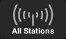

<div class="footer">
  <sf-player ng-show="config.hasPlayer"></sf-player>
  <div class="row nav">
    <div class="col-xs-12">
      <a ui-sref-active="selected" ui-sref="all-stations">
        
        
      </a>
      <a ui-sref-active="selected" ui-sref="fav-stations">
        
        
      </a>
      <a ui-sref-active="selected" ui-sref="fav-songs">
        
        
      </a>
      <a ui-sref-active="selected" ui-sref="community">
        
        
      </a>
      <a ng-if="!$root.playingStation" class="disabled">
        <div class="dimmer"></div>
        
      </a>
      <a ng-if="$root.playingStation" ui-sref-active="selected" ui-sref="now-playing({stationID: $root.playingStation._id})">
        
        
      </a>
    </div>
  </div>
</div>
